There are two ways of getting information about objects on the heap. On the one hand, a profiling agent can track the allocation and the garbage collection of each object. In JProfiler, this is called "allocation recording". It tells you where objects have been allocated and can also be used to create statistics about temporary objects. On the other hand, the profiling interface of the JVM allows the profiling agent to take a "heap snapshot" in order to inspect all live objects together with their references. This information is required to understand why objects cannot be garbage collected.
Both allocation recording and heap snapshots are expensive operations. Allocation recording has a large impact on
the runtime characteristics, because the java.lang.Object constructor has to be instrumented
and the garbage collector continuously has to report to the profiling interface. This is why allocations are not
recorded by default and you have to start and stop recording explicitly.
Taking a heap snapshot is a one-time operation. However, it can pause the JVM for several seconds and the analysis
of the acquired data may take a relatively long time, scaling with the size of the heap.
JProfiler splits its memory analysis into two view sections: The "Live memory" section presents data that can be updated periodically whereas the "Heap walker" section shows a static heap snapshot. Allocation recording is controlled in the "Live memory" section but the recorded data is also displayed by the heap walker.
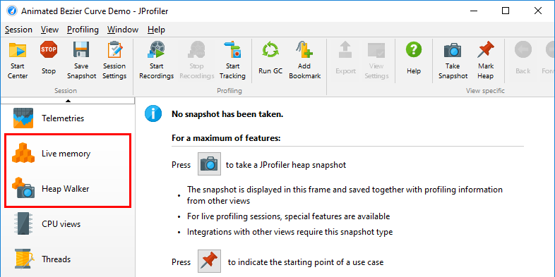
The three most common problems that can be solved with memory profiling are: Finding a memory leak, reducing memory consumption and reducing the creation of temporary objects. For the first two problems, you will mainly use the heap walker, mostly by looking at who is holding on to the biggest objects in the JVM and where they were created. For the last problem you can only rely on the live views that show recorded allocations, because it involves objects that have already been garbage collected.
To get an overview of what objects are on the heap, the "All objects" view shows you a histogram of all classes and their instance counts. The data that is shown in this view is not collected with allocation recording but by performing a mini heap snapshot that only calculates the instance counts. The larger the heap, the longer it takes to perform this operation, so the update frequency of the view is automatically lowered according to the measured overhead. When the view is not active, no data is collected and the view does not generate any overhead. As with most views that are updated dynamically, a Freeze tool bar button is available to stop updating the displayed data.
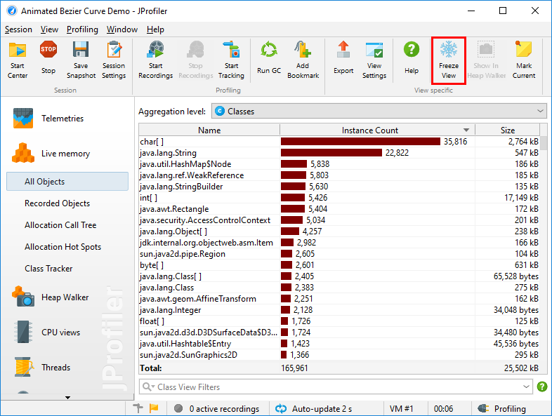
The "Recorded objects" view, on the other hand, only shows the instance counts for objects that have been allocated after you have started allocation recording. When you stop allocation recording, no new allocations are added, but garbage collection continues to be tracked. In this way you can see what objects remain on the heap for a certain use case. Note that objects may not be garbage collected for a long time. With the Run GC tool bar button you can speed up this process.
When looking for a memory leak, you often want to compare instance counts over time. To do that for all classes, you can use the differencing functionality of the view. With the Mark Current toolbar button, a Difference column is inserted and the histogram of the instance counts shows the baseline values at the time of the marking in green color.
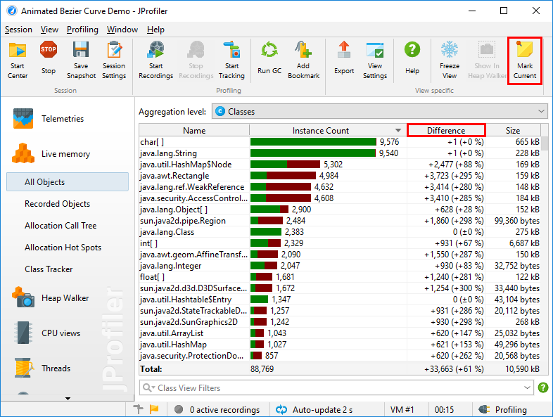
For selected classes, you can also show a time-resolved graph with the Add Selection to Class Tracker action from the context menu.
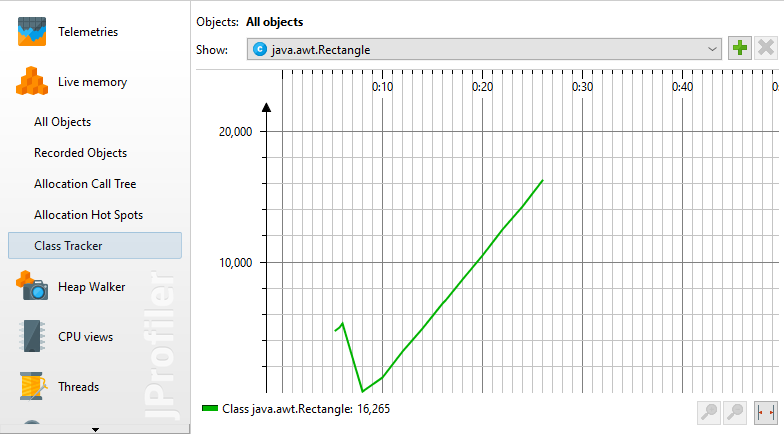
When allocation recording is active, JProfiler takes note of the call stack each time an object is allocated. It does not use the exact call stack, for example from the stack-walking API, because that would be prohibitively expensive. Instead, the same mechanism is used that is configured for CPU profiling. This means that the call stack is filtered according to the call tree filters and that the actual allocation spot can be in a method that is not present in the call stack, because it is from an ignored or compact-filtered class. However, these changes are intuitively easy to understand: A compact-filtered method is responsible for all allocations that are made in further calls to compact-filtered classes.
If you use sampling, the allocation spots become approximate and may be confusing. Unlike for time measurements,
you often have a clear idea of where certain classes can be allocated and where not. Because sampling
paints a statistical rather than an exact picture, you may see allocation spots that are seemingly impossible,
such as java.util.HashMap.get allocating one of your own classes. For any kind of analysis where
exact numbers and call stacks are important, it is recommended to use allocation recording together with
instrumentation.
Just like for CPU profiling, the allocation call stacks are presented as a call tree, only with allocation counts and allocated memory rather than invocation counts and time. Unlike for the CPU call tree, the allocation call tree is not displayed and updated automatically, because the calculation of the tree is more expensive. JProfiler can show you the allocation tree not only for all objects, but also for a selected class or package. Together with other options, this is configured in the options dialog that is shown after you ask JProfiler to calculate an allocation tree from the current data.
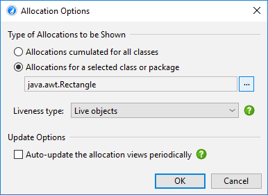
A useful property of the CPU call tree is that you can follow the cumulated time from top to bottom because each node contains the time that is spent in the child nodes. By default the allocation tree behaves in the same way, meaning that each node contains the allocations that are made by the child nodes. Even if allocations are only performed by leaf nodes deep down in the call tree, the numbers propagate up to the top. In this way, you can always see which path is worth investigating when opening branches of the allocation call tree. "Self-allocations" are those that are actually performed by a node and not by its descendants. Like in the CPU call tree, the percentage bar shows them with a different color.
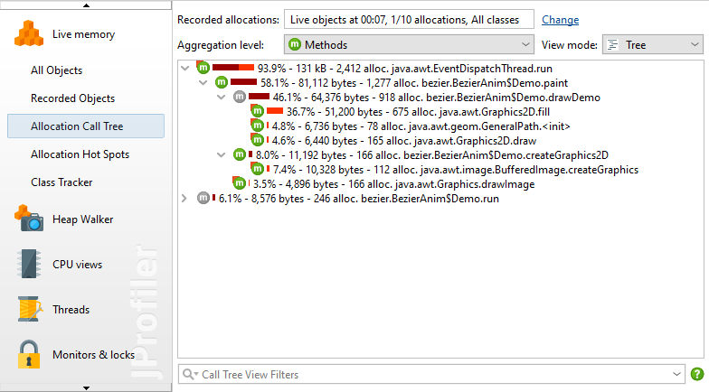
In the allocation call tree, there are often a lot of nodes where no allocations are performed at all, especially if you show allocations for a selected class. These nodes are only there to show you the call stack leading to the node where the actual allocation has taken place. Such nodes are called "bridge" nodes in JProfiler and are shown with a gray icon as you can see in the above screen shot. In some cases, the cumulation of allocations can get in the way and you only want to see the actual allocation spots. The view settings of the allocation tree offers an option to show uncumulated numbers for that purpose. If activated, bridge nodes will always show zero allocations and have no percentage bar.
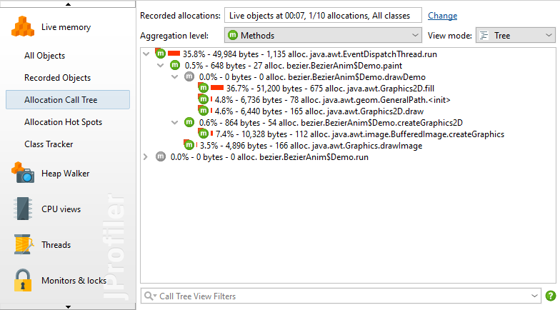
The allocation hot spots view is populated together with the allocation call tree and allows you to directly focus on the methods that are responsible for creating the selected classes. Like the recorded objects view, the allocation hot spots view supports marking the current state and observing the differences over time. A difference column is added to the view that shows how much the hot spots have changed since the time when the Mark Current Values action was invoked. Because the allocation views are not updated periodically by default, you have to click on the Calculate tool bar button to get a new data set that is then compared to the baseline values. Auto-update is available in the options dialog but not recommended for large heap sizes.
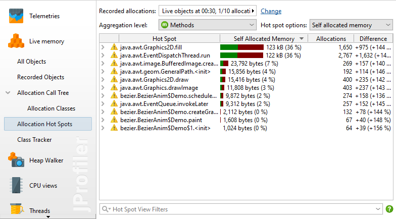
Recording each and every allocation adds a significant overhead. In many cases, the total numbers for allocations are not important and relative numbers are sufficient to solve problems. That is why JProfiler only records every 10th allocation by default. This reduces the overhead to roughly 1/10 compared to recording all allocations. If you would like to record all allocations, or if even less allocations are sufficient for your purpose, you can change the recording rate in the recorded objects view as well as the parameter dialog of the allocation call tree and hot spot views.
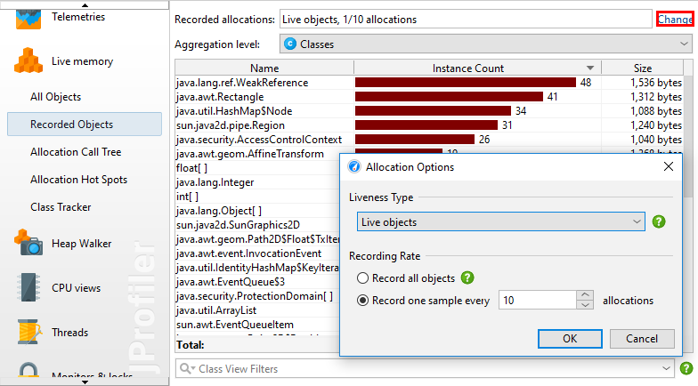
The setting can also be found on the "Advanced Settings->Memory profiling" step of the session settings dialog where it can be adjusted for offline profiling sessions.
The allocation recording rate influences the VM telemetries for "Recorded objects" and "Recorded throughput" whose values will be measured at the configured fraction. When comparing snapshots, the allocation rate of the first snapshot will be reported and other snapshots will be scaled accordingly, if necessary.
When calculating the allocation tree and allocation hot spot views, you have to specify the class or package whose allocations you want to see up-front. This works well if you already focused on particular classes, but is inconvenient when trying to find allocation hot spots without any pre-conceptions. One way is to start to look at the "Recorded objects" view and use the actions in the context menu for switching to the allocation tree or allocation hot spot views for the selected class or package.
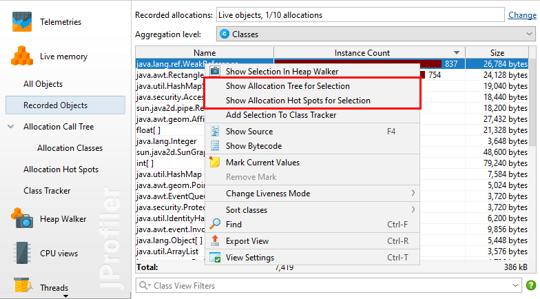
Another way is to start with the allocation tree or allocation hot spots for all classes and use the Show classes action to show the classes for a selected allocation spot or allocation hot spot.
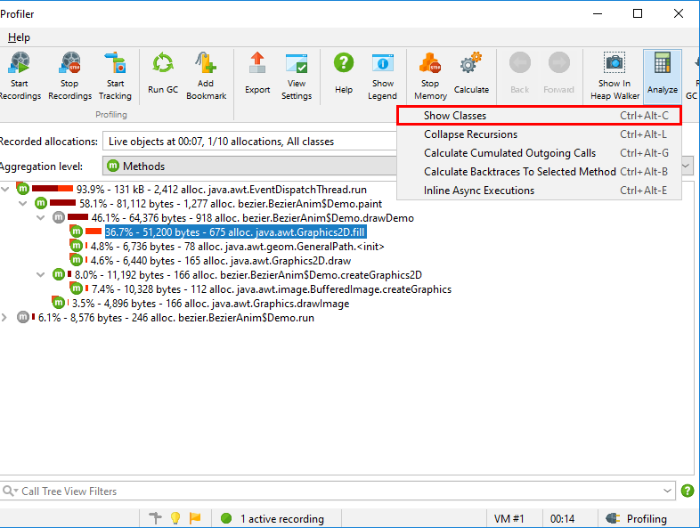
The histogram of the allocated classes is shown as a call tree analysis. This action also works from other call tree analyses.
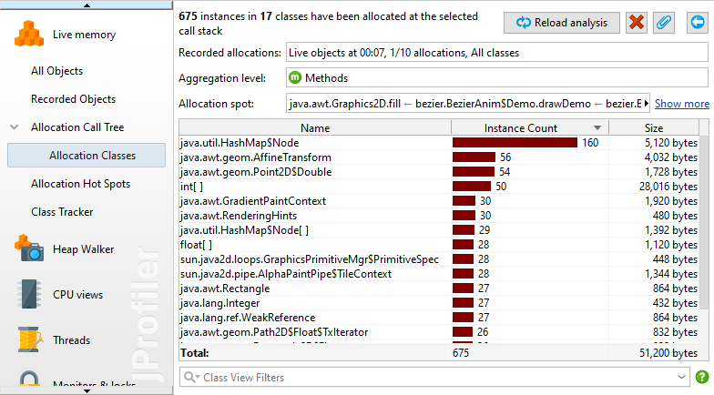
The classes analysis view is static and is not updated when the allocation tree and hot spot views are recalculated. The Reload Analysis action will first update the allocation tree and then recalculate the current analysis view from the new data.
Allocation recording cannot only show the live objects, but also keeps information on garbage collected objects. This is useful when investigating temporary allocations. Allocating a lot of temporary objects can produce significant overhead, so reducing the allocation rate often improves performance considerably.
To show garbage collected objects in the recorded objects view, change the liveness selector to either Garbage collected objects or Live and garbage collected objects. The options dialog of the allocation call tree and allocation hot spot views has an equivalent drop-down.
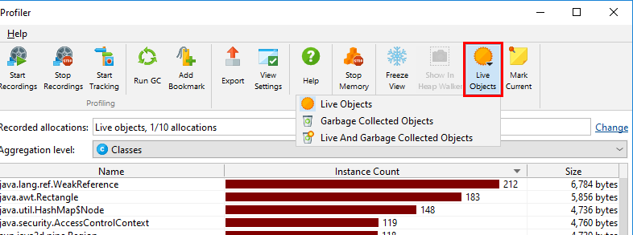
However, JProfiler does not collect allocation tree information for garbage collected objects by default, because the data for live objects only can be maintained with far less overhead. When switching the liveness selector in the "Allocation Call Tree" or "Allocation Hotspots" view to a mode that includes garbage collected objects, JProfiler suggests to change the recording type. This is a change in the profiling settings, so all previously recorded data will be cleared if you choose to apply the change immediately. If you would like to change this setting in advance, you can do so in "Advanced Settings" -> "Memory Profiling" in the session settings dialog.
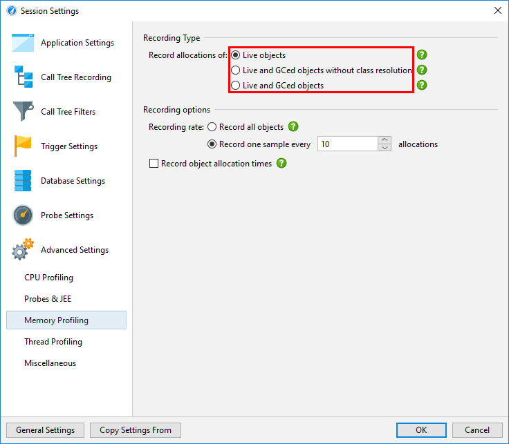
Any more advanced type of question will involve references between objects. For example, the sizes that are displayed in the recorded objects, allocation tree and allocation hot spot views are shallow sizes. They just include the memory layout of the class, but not any referenced classes. To see how heavy objects of a class really are, you often want to know the retained size, meaning the amount of memory that would be freed if those objects were removed from the heap.
This kind of information is not available in the live memory views, because it requires enumerating all objects on the heap and performing expensive calculations. That job is handled by the heap walker. To jump from a point of interest in the live memory views into the heap walker, the Show in Heap Walker tool bar button can be used. It will take you to the equivalent view in the heap walker.
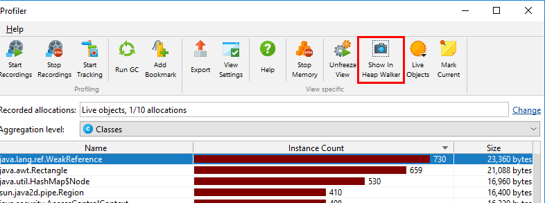
If no heap snapshot is available, a new heap snapshot is created, otherwise JProfiler will ask you whether to use the existing heap snapshot.
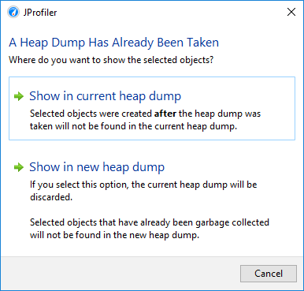
In any case, it is important to understand that the numbers in the live memory views and in the heap walker will often be very different. Apart from the fact that the heap walker shows a snapshot at a different point in time than the live memory views, it also eliminates all unreferenced objects. Depending on the state of the garbage collector, unreferenced objects can occupy a significant portion of the heap.